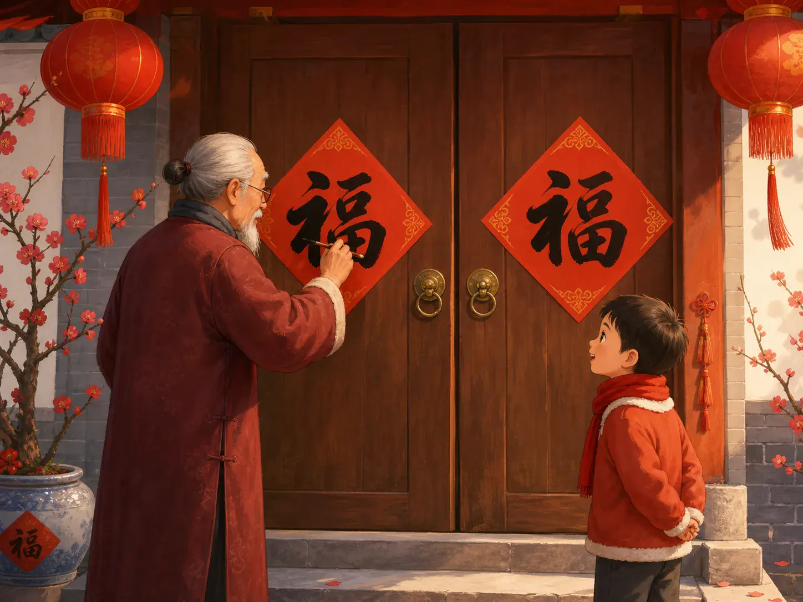
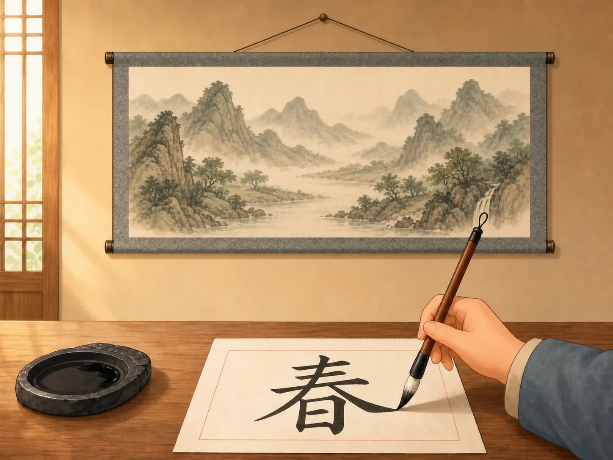
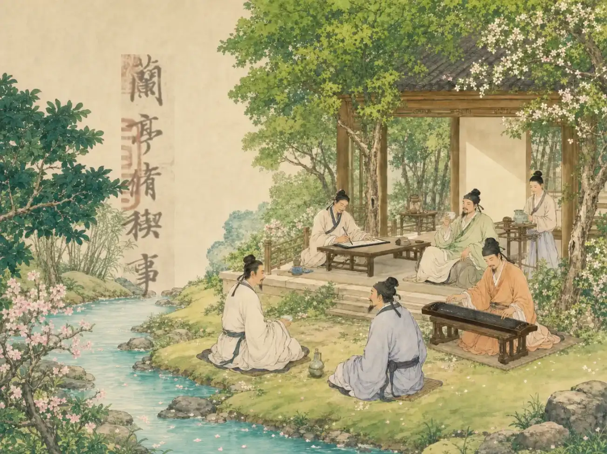

用毛笔跳舞：神奇的书法
Dancing with a Brush: The Magic of Calligraphy
Page 1
在中国，写字常常不只是写字
In China, Writing Is Often More Than Writing

At New Year, many people use a brush to write the character for good fortune. People are watching not only the word, but also the way the brush moves.
快过年的时候，街角常常有人铺开红纸，提起毛笔，写下一个大大的“福”字。
很多人围着看，不只是为了知道写了什么，而是想看这一笔怎么压下去，又怎么轻轻提起来。
这就是书法有意思的地方。在中国，写字常常不只是把话写出来，也是在用笔讲一种节奏和力量。
When New Year is near, you can often see someone spread out bright red paper, lift a brush, and write a large fu character for good fortune.
People gather around not only to know what the word says. They also want to watch how the brush presses down and then lifts again.
That is part of what makes calligraphy so interesting. In China, writing is often more than putting down words. It is also a way to show rhythm and strength with the brush.
Page 2
同一支毛笔，也能写得稳、快、轻、重都不一样
One Brush Can Write in Many Different Ways

Brush lines can be thick or thin, wet or dry, so they often seem to be moving even after the writing is finished.
毛笔和铅笔不太一样。它能写出很粗的线，也能一下变得很细；能写得很湿，也能写得快要干了。
所以同样是写字，有的字站得很稳，有的字流得很快，还有的字像风一样一下就跑过去了。
孩子就算看不懂每个字，也常常能先感觉到：这一张字很安静，那一张字很有冲劲。
A brush is not quite like a pencil. It can make a line thick and then suddenly thin. It can write with wet ink or with almost dry ink.
That is why writing with a brush can look very different from one piece to another. Some words stand firmly. Some flow quickly. Some race across the page like wind.
Even if a child cannot read every character, the child can often still feel something first: this piece feels calm, and that piece feels full of energy.
Page 3
有一位写字特别厉害的人，后来大家一直记着他
One Famous Writer Stayed in People's Memory for Centuries

Long ago, Wang Xizhi met friends at Orchid Pavilion. One piece he wrote there later became famous.
很久以前，有一位特别有名的书法家，叫王羲之。一次他和朋友们一起聚会，一边喝酒，一边写诗。
后来，他写了一篇很有名的字帖。人们喜欢它，不只是因为内容好，也因为那些字看起来像在呼吸，像在往前走。
这说明书法最迷人的地方，不只是“写得清楚”，而是字里真的会带着一个人的手劲、心情和那一刻的感觉。
Long ago, there was a very famous calligrapher named Wang Xizhi. One day he gathered with friends, drank wine, and wrote together with them.
Later, one piece he wrote became especially famous. People loved it not only for the words, but also because the writing itself seemed to breathe and move forward.
That shows something important. The magic of calligraphy is not only writing clearly. The writing can also carry a person's hand, mood, and feeling from that moment.
Page 4
所以书法看起来像写字，也像在看一场安静的表演
So Calligraphy Feels Like Writing and a Quiet Performance at Once
书法当然是字，可它又不只是字。笔快一点、慢一点，重一点、轻一点，整张纸的感觉就会完全不同。
也因为这样，很多人看书法时，会像看舞蹈一样去看动作，又像听音乐一样去感觉节奏。
一支毛笔，一点墨，一张纸，就能把安静、力量和人的性格都写出来。
Of course, calligraphy is writing. But it is not only writing. If the brush moves faster or slower, heavier or lighter, the whole page can feel different.
That is why people often look at calligraphy the way they watch dance, and feel it almost the way they hear music.
With one brush, a little ink, and one sheet of paper, a person can write out calmness, strength, and even character.
小结
In Summary
书法最特别的地方，是它让字像活起来一样。毛笔一压一提，写出来的不只是意思，还有速度、轻重和人的感觉。
所以在中国，写字常常也像一门安静的艺术。
What makes calligraphy special is the way it makes writing feel alive. When the brush presses and lifts, it shows not only meaning, but also speed, weight, and feeling.
So in China, writing is often also a quiet art.